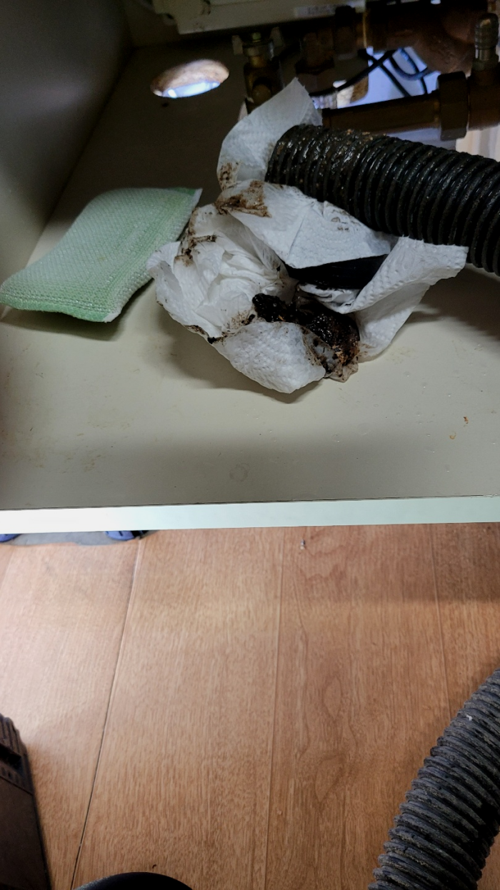
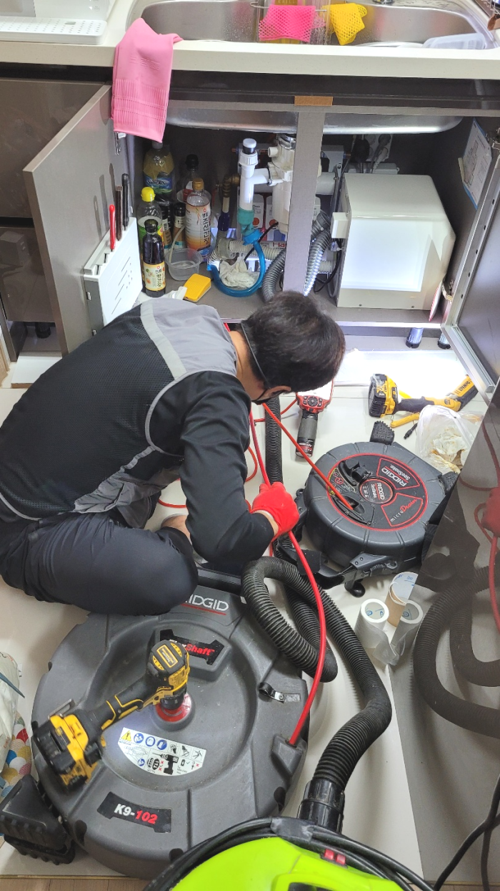
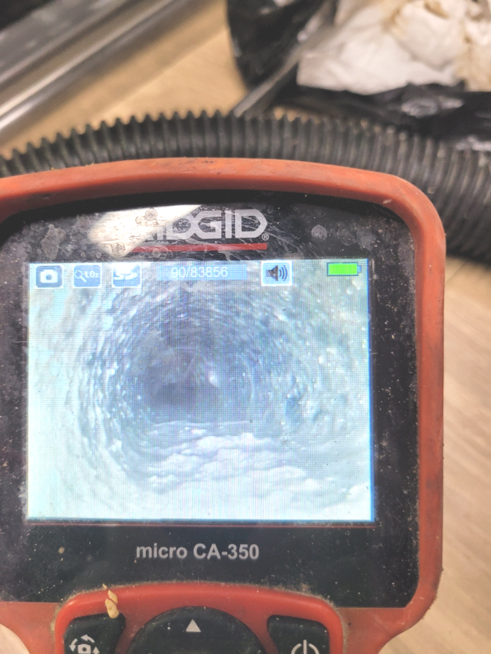
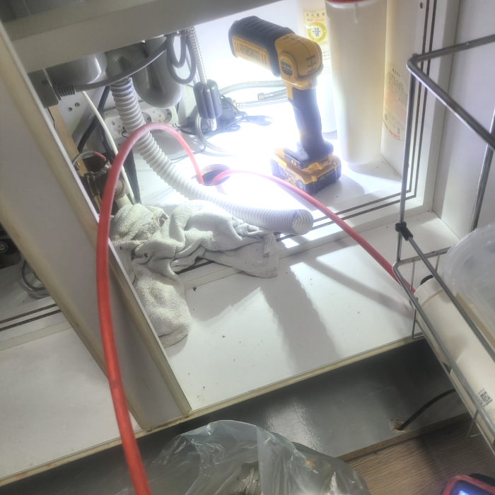
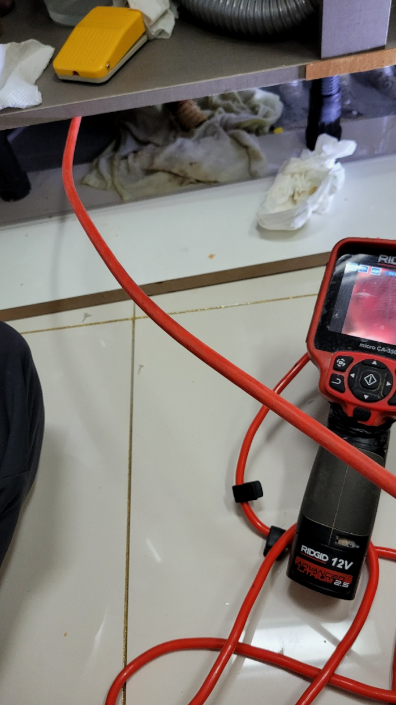
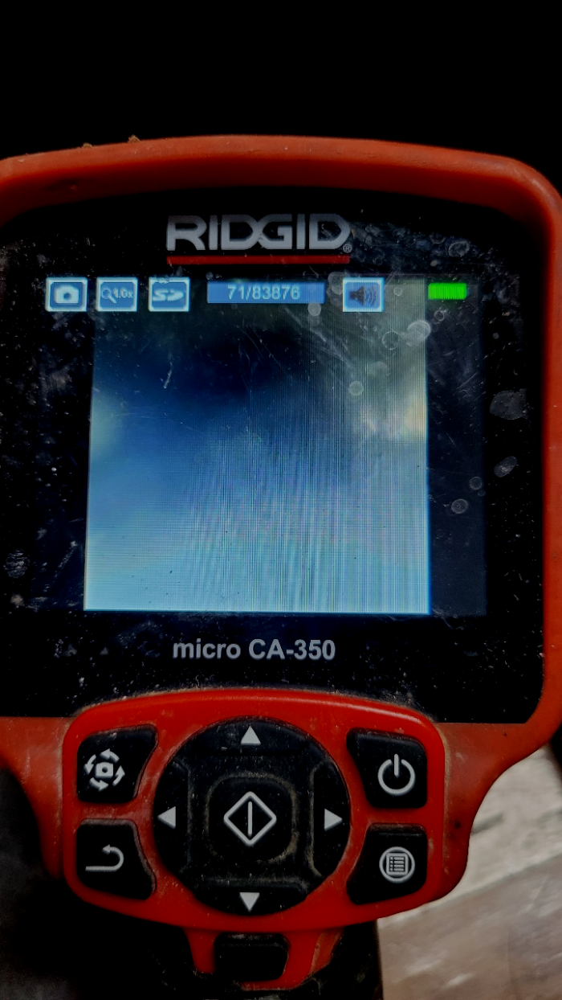

🏠 군포 수리동 씽크대막힘 궁내동 광정동 주방하수구역류 뚫는업체
용인 싱크대막힘 전문 시공 후기

📋 작업 개요
- 위치: 용인
- 서비스 유형: 싱크대막힘, 변기막힘, 하수구막힘, 배관막힘, 역류해결, 뚫는업체, 배관청소, 고압세척, 설비공사
- 작업 일시: 2024. 2. 23. 17:38
- 업체명: 하수구수사대 (010-5615-2118)
🔍 문제 상황
반갑습니다^^
설비전문업체 "하수구수사대"를 찾아주셔서 감사드려요^^
이번글에선 막혀버린 배출구 배관해서 말해드리겠습니다.빌라등 물을사용해야하는 곳이있다면 배출구가 존재하는데요. 이러하듯 당연한존재가 막히면 곤혹스러울텐데요. 문제없이 쓰고있던 배출구시설이 갑자기 망가진다면 불편해지게됩니다.
배관 문제의 원인은 다양하며, 클리너나 세제를 사용하여 해결하기 어려운 경우가 있습니다. 이때 플렉스 샤프트기를 사용하면 어떠한 상황에서도 효과적으로 배관을 청소할 수 있습니다. 하수관 막힘은 생활에 큰 불편함을 초래하므로, 빠른 대처가 필요합니다.

🔎 원인 분석
💡 전문가 진단: 군포 수리동 씽크대막힘 궁내동 광정동 주방하수구역류 뚫는업체
군포 수리동 씽크대막힘 궁내동 광정동 주방하수구역류 뚫는업체
가정내에서 일상을보내려면 필히이용되어야하는것이 배수구관이죠 이런요인으로 배수구가 배설이 용이하지않으면 시공기사를 출동시키는것도 많아지고있는데요. 간단한방법으로 잔여물을부시는 제품을 구입해서이용하니 배수가안되는상태가 잦아지고있답니다
보이지 않는 곳도 섣불리 작업을 했다가 오히려 더 큰 문제를 만들어서 더 큰 피해를 만들게 될 수도 있기 때문에 절대로배수구 함부로 건드리지 말아야 합니다. 구조를 제대로 알지 못하고 손을 대어 더 큰 문제가 발생하는 사례들을 많이 생겨납니다.
문제점의 원인과 해결방안을 어떻게 실시하였는지 확인시켜 드릴게요! 무엇보다도 배관배관을 해결하는데에 내시경의 존재를 빼놓으면 안되는데요! 여러분들도 업체를 선정하실때 내시경카메라가 업체에 구비되어 있는지 확인하셔야되세요! 무조건적으로 함께해야하는 기계라고 설명드릴 수 있죠.
저희는 오랜 경력과 노하우를 통해서 전문 장비를 가지고 작업을 해결하고 있는 곳인 만큼 퇴수구 막힘이 발생을 하게 되면 고객과의 빠른 상담을 한 후에 방문을 진행해 드리고 있습니다. 우리가 무심코 매일 사용을 하고 있는 퇴수구배관은 잠시만 막히게 되더라도 아주 불편한 상황이 발생하게 될 수밖에 없는데요.

🔧 작업 과정
아무래도 전문장비가 없으면 하수 막힘을 발생하면 배수관을 교체공사 해야 하는 경우가 많았는데요. 많은 고객님들이 번거롭고 부담스럽다는 생각을 하실수 있었던 곳입니다. 하지만 이제는 장비를 활용해서 신속하게 문제를 해결할수 있어서 많이 좋았습니다.
기름을 그대로 씻기보다는 타월로 한 번 닦아주어야 하며 따뜻한 물을 흘려보내면 배출구 막힘을 예방할 수 있습니다. 주의 사항 등을 고객님께도 말씀드려 재발을 방지하도록 해주었습니다. 위와 같이 배출구막힘으로 고민이 있으시다면 저희배출구 업체로 편하게 연락해 주시기를 바랍니다.^^
하수도 막힘의 첫 번째 이유는 오랫동안 하수구 관리를 하지 않은 현장인 경우입니다. 하수도는 주기적으로 확인을 해줘야 하는 부분입니다. 물이 제대로 내려가는지, 하수구에 이물질일 쌓이는 건 아닌지 중간 중간 확인을 해줘야만 막힘 문제 없이 오래 사용할 수 있죠.
여기서끝이아닌배수구 위치도 알려주는 장비는물론 고수압으로 처리가능한 크란즐세척기도 빠트릴수없죠. 이런것들을 대비하셨다면 문제가심화되었어도 금방뚫어버릴수있어요
내시경 카메라를 내부 깊숙이 넣어 살펴보니 외부로 빠지는 곳에서 90도로 꺾이는 수직 배관배관에서도 이물질이 아주 쌓여있었습니다. 아무래도 이물질이 물살을 타고 내려가면서 물이 벽에 강하게 충격하게 되어 쌓여있었을 것으로 판단되었습니다.
배출구막힘의 정도가 심할수록 석회의 크기도 크거나 단단한 정도가 심할 수 있습니다. 그래서 이를 제대로 제거해 줄 배출구장비와 실력을 지닌 전문설비업체에 맡겨서 막힘을 뚫는 것이 가장 좋은 해결 방법이지요.
어떤 기준으로 업체를 선정해야 하는지 감이 오실 텐데요. 저희를 통해서 함께 하신다면 모든 것들이 딱딱 들어맞을 겁니다. 멀쩡한 곳을 알아보기 전에 염려스러운 부분이 있다면 아무래도 수리비 문제일 것입니다.


✅ 작업 완료
밤이든 낮이든 근무 중이기에 언제가 됐든 간에 의뢰해 주세요. 직접 보지 않고선 정확한 금액 안내가 힘들겠지만 기준 금액만큼은 말씀 가능하니 여쭙고 싶은 상황이 있으실 경우에는 전화 주시면 되십니다.하수관가 막혀 대처하고 싶으시거나 상담을 원하실 경우 전화 걸어주세요
#하수구막힘 #하수구뚫음 #하수구역류 #씽크대막힘 #싱크대역류 #오수관막힘 #하수구청소 #욕실하수구막힘 #변기막힘 #하수구뚫는비용 #싱크대수리 #화장실막힘




⚠️ 주방 싱크대 배관 막힘 예방 수칙
- ✅ 기름기가 묻은 식기나 프라이팬은 설거지 전 키친타올로 반드시 기름때를 닦아내세요.
- ✅ 주기적으로 싱크대 개수대에 뜨거운 물을 가득 받아 한 번에 내려 배관 내부 기름을 씻어내세요.
- ✅ 배수구 거름망을 미세한 필터로 사용하시고 음식물 찌꺼기가 틈으로 새어 들지 않게 관리하세요.
- ✅ 베이킹소다와 식초를 뜨거운 물과 함께 일주일에 한 번씩 부어주면 배관 살균과 막힘 예방에 좋습니다.
💡 핵심 정리
- 확실한 장비 작업(내시경 점검 및 샤프트 스케일링)으로 원인을 뿌리 뽑습니다.
- 작업 후 1년 이내에 동일한 부위 재발 시 100% 무상 A/S 서비스를 보장합니다.
- 서울 · 경기 · 인천 전 지역에 24시간 언제든 긴급 출동할 수 있도록 항시 대기 중입니다.
❓ 자주 묻는 질문 (FAQ)
🚨 용인 싱크대막힘 문제로 고민이신가요?
정확한 원인 진단과 확실한 시공으로 재발 없는 해결을 약속드립니다.
24시간 긴급 출동 | 서울 · 경기 · 인천 전지역 | 1년 내 재발 시 무상 A/S